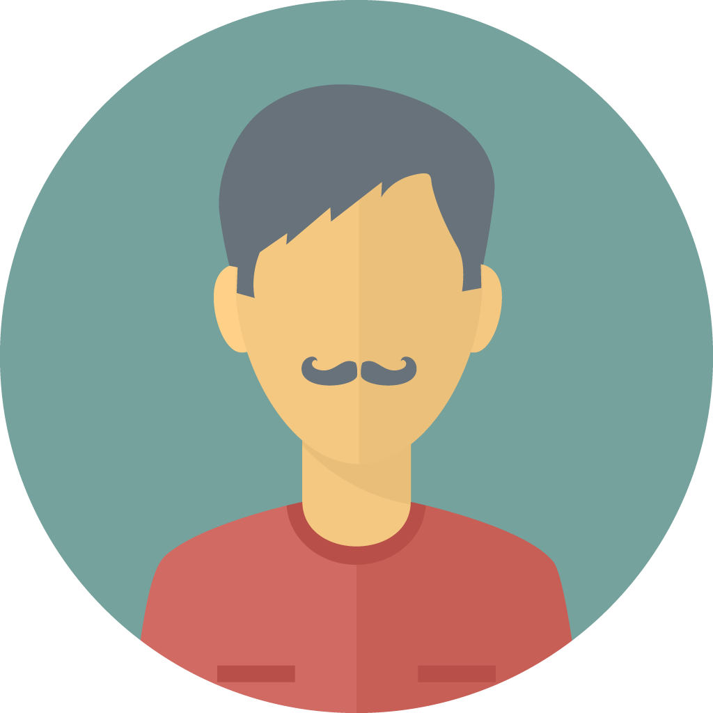

Project Tessera is a design/UX portfolio project for a fictional AI-assisted cybersecurity SaaS platform that helps large companies manage, assess and continuously monitor third-party vendor risk. This page is the front door: the working prototype, the design thinking behind it, the people it is for, the research, and the design system and brand. The notes for each piece are in the repo.
The prototype
The working app: a floating, collapsible left-hand navigation (pixel-matched to the Figma component) and a Dashboard built for three roles. Each card has an AI sparkle that opens a chat about that card, task rows have working buttons and a detail drawer, and a live scan feeds new tasks in. Switch role from the person at the bottom of the sidebar.
The full vendor register view: tier filter chips, search/region/owner/status filters, bulk row selection, and a sample of the 612-vendor portfolio — the working list Dana, Priya, and Marcus triage from day to day.
Vendor security reviews, RoPA entries, DPIAs, EU AI Act screenings, and criticality tiering in one queue — type filter chips, overdue/due-soon highlighting, and bulk assign/escalate actions.
The Tessera mark itself as a live data-flow hub: click a category node to trace it through the register below — cross-border transfers, legal basis, and data category, all in one view.
Signals from six public-internet sources flow through the Tessera mark and come out as investigation tasks, above a filterable register of recent signals. The Dashboard carries the companion vendor mosaic.
What is built, and what is not. Built: Dashboard (three roles), Vendors, Assessments, Data Mapping, Monitoring & Alerts. Not built yet: Remediation & Tasks, Policies, Reports, and Setup & Configuration. They appear in the app's navigation dimmed and marked "Soon". Everything in the prototype is sample data, and refreshing a page resets it.
Design thinking
How the Dashboard was designed before it was built: the four questions Dana needs answered, the order of the sections and why, and a note on each block explaining where it sits. The annotated version numbers each block; the clean version is the visual target the Dashboard was built from.
Four animated concepts for showing that Tessera never stops scanning the public internet, and how a high-risk finding becomes an investigation task: radar sweep, vendor mosaic, signal flow, and pulse ribbon. The mosaic and the signal flow were taken into the app.
Design system and brand
The style guide: colour (with contrast measured and the known gaps listed), type, spacing, the faded card, every component rendered live from the app's own files, the AI chat patterns, and motion.
The logo, marks and AI sparkle on light and dark surfaces, what each is for, where it is used, and what the brand kit still needs.
Personas

Dana Vasquez
Sr. Vendor Risk Manager

Priya Nair
Vendor Risk Analyst II

Marcus Chen
Vendor Risk Analyst I
Each persona page links to the dashboard built for them. Five more roles have avatars and are next to be drafted:
Privacy Operations Manager
To be drafted
Privacy Engineer
To be drafted

Information Security / CISO
To be drafted
Vendor
To be drafted
Consumer
To be drafted